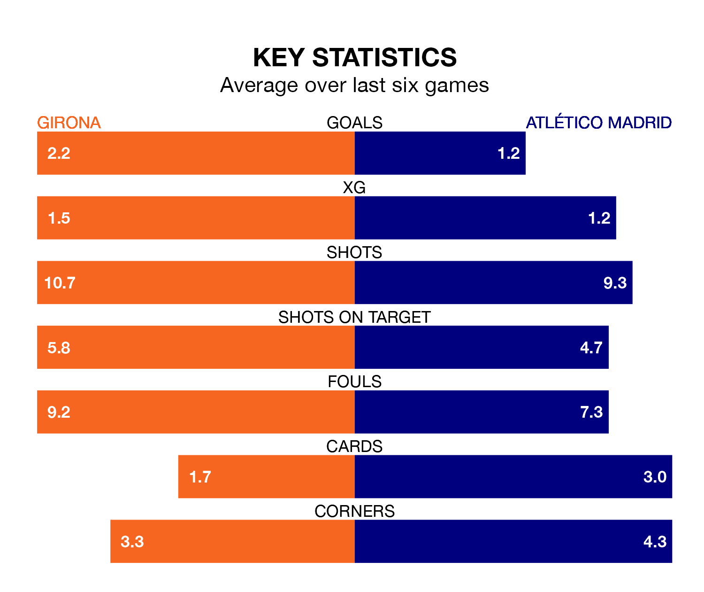

Two of La Liga's top sides face each other at Estadi Municipal de Montilivi in Wednesday's late kick-off, when second-placed Girona host third-placed Atlético Madrid.
Girona have picked up 14 wins and three draws from 18 games so far this season, and sit seven points above the visitors going into the 8.30pm match.
Atlético Madrid, meanwhile, have won 12 and drawn two, picking up 38 points.
With 42 goals in 18 games so far this season, Girona are the league's highest scorers with 2.3 goals per game. And they are conceding fewer than average, letting in 21 goals at a rate of 1.2 per game.
Atlético are also above average scorers, with 2.0 goals per game, compared to a league average of 1.3. They have conceded 1.1 goals per game.
In Artem Dovbyk, the hosts have one of the league's most on-form strikers so far this season. He has notched 11 goals in 17 appearances, to sit third in the scoring charts.
Atlético Madrid's top scorer, with 11 goals in 18 games, is Antoine Griezmann.
Girona are in good form in La Liga, with four wins and two draws from their last six games.
With three wins and a draw over that period, the away team's form is worse – they have taken 10 points from 18, compared to Girona's 14.
In the last five years, Girona and Atlético have played each other on five occasions. Atlético won three of them and they drew twice.
On average, Girona scored 1.0 goal and Atlético Madrid 1.8 in those matches.
Their last meeting was on March 13, when Atlético won 1-0 away.
Girona's last match was on December 21, a 1-1 draw against Real Betis, with Dovbyk getting the goal for Girona.
Atlético beat Sevilla 1-0 last time out, on December 23, with Marcos Llorente on the scoresheet.
Wednesday's match will be refereed by Alejandro José Hernández Hernández, who has taken charge of six La Liga games so far this season, issuing four red cards and booking 42 players. He has awarded one penalty.
He is yet to oversee a match featuring either Girona or Atlético this season.
Updated: 12:57, 02/01/24